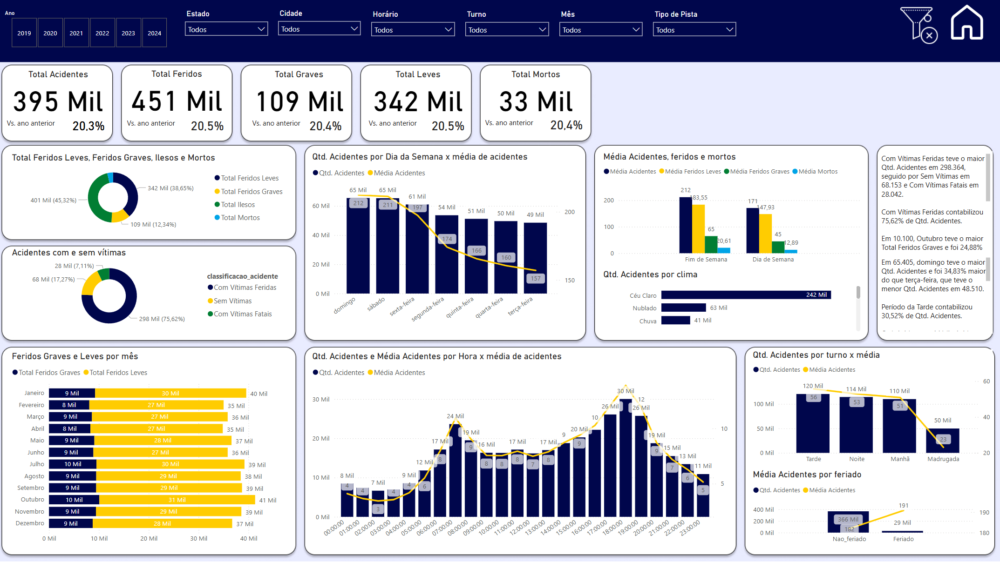

Análise de Acidentes de Trânsito
Sobre o Projeto
Este projeto demonstra habilidades de análise de dados utilizando SQL, Power BI e Python para explorar dados de acidentes de trânsito em rodovias brasileiras. O objetivo é identificar padrões, tendências e fatores críticos que contribuem para acidentes de trânsito, fornecendo insights valiosos para tomada de decisões estratégicas.
Objetivos do Projeto
- Analisar dados de acidentes da PRF (2019-2024)
- Identificar padrões temporais e geográficos
- Avaliar impactos da pandemia nos acidentes
- Determinar fatores de risco principais
Metodologia
- Coleta de dados da PRF
- Limpeza e preparação dos dados
- Análise exploratória
- Criação de visualizações geográficas
- Desenvolvimento de recomendações
Tecnologias Utilizadas
- SQL (Análise Exploratória de Dados)
- Python (Exportação para PostgreSQL)
- Power BI (Dashboards interativos)
- Bibliotecas de visualização geográfica
Principais Descobertas
- Redução de 5,9% nos acidentes durante a pandemia em 2020
- Maior incidência de acidentes nos finais de semana
- Pico de acidentes entre 18h e 19h
- 50% dos acidentes ocorrem em pista simples
- Principais causas: falta de atenção, reação tardia e velocidade incompatível
Impacto do Projeto
- Auxílio na tomada de decisões para segurança viária
- Suporte ao planejamento de operações de fiscalização
- Informações para melhorias em infraestrutura
- Orientação para campanhas de conscientização